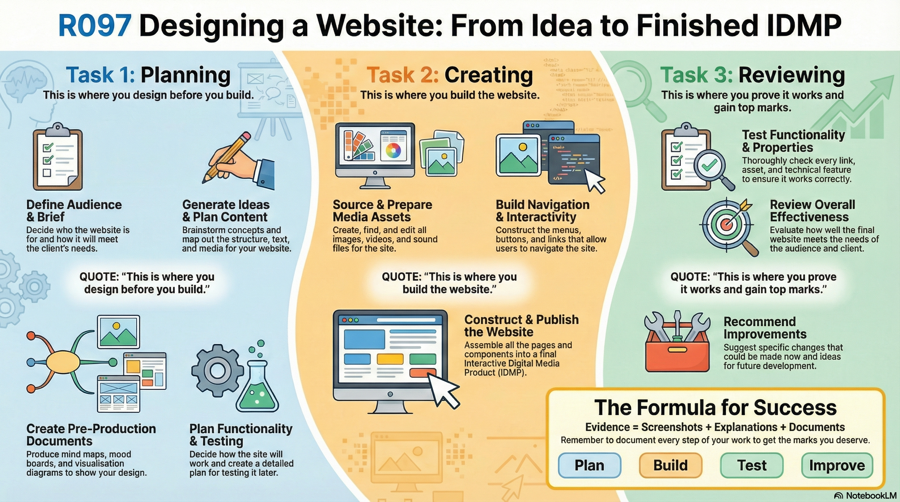

Home / Overview
Use this step‑by‑step guide to produce evidence for OCR Creative iMedia R097 (Designing a Website). Work through pages 01→21 in order.
Link every decision to the client brief
Be specific about the target audience
Screenshot the process, not just the final site
Test, fix, then retest
Downloads:
Common mistake:
Students describe what they made, but don’t explain **why**. Marks come from justified decisions linked to brief + audience, plus evidence of testing.
What you’ll produce
- An IDMP (Interactive Digital Media Product) – for R097 this is a **website** (multi‑page, navigational, interactive).
- Planning evidence (Task 1): audience, ideas, layouts, functionality, testing, assets.
- Build evidence (Task 2): create/repurpose assets, build navigation + interactivity, publish.
- Review evidence (Task 3): testing results, evaluation, improvements + further development.
Quick success checks
- Can you point to where the brief requirements are met on your website?
- Does the design suit the audience (style, language, imagery, accessibility)?
- Do your assets look web‑ready (correct size, good compression, consistent branding)?
- Do all links/buttons work on desktop and mobile?
- Have you kept a tidy folder structure (Task 1 / Task 2 / Task 3)?